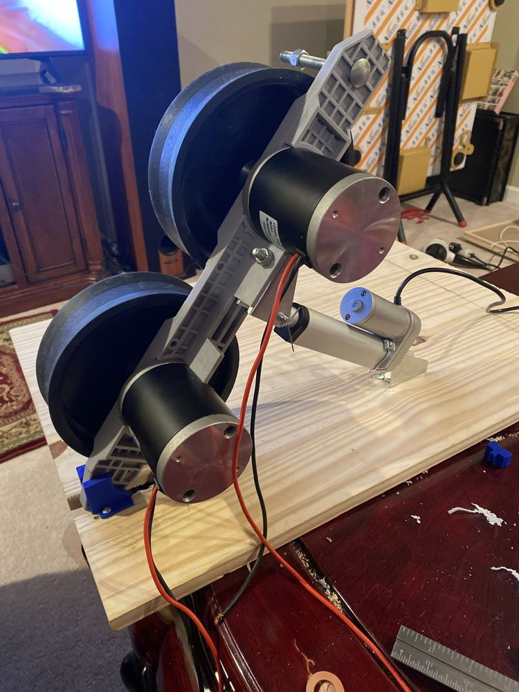
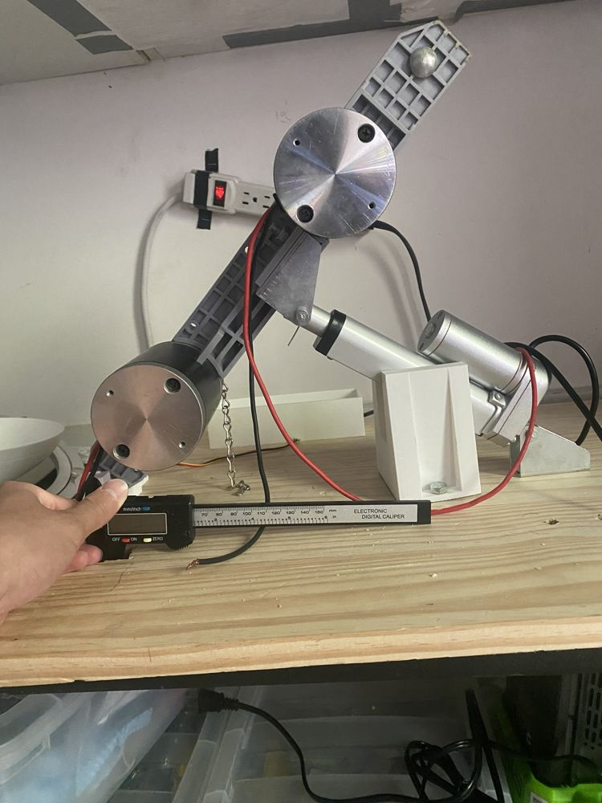
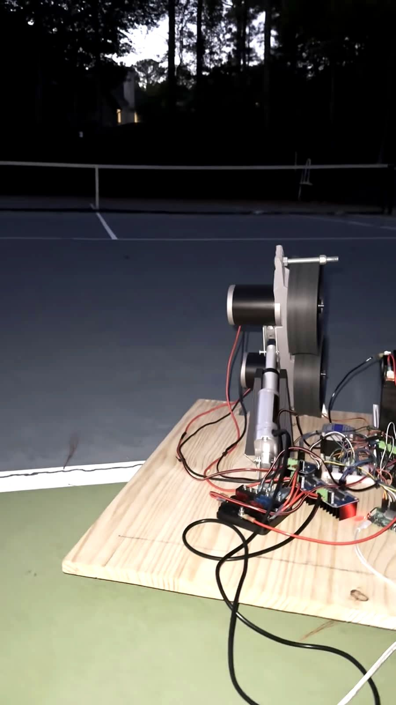
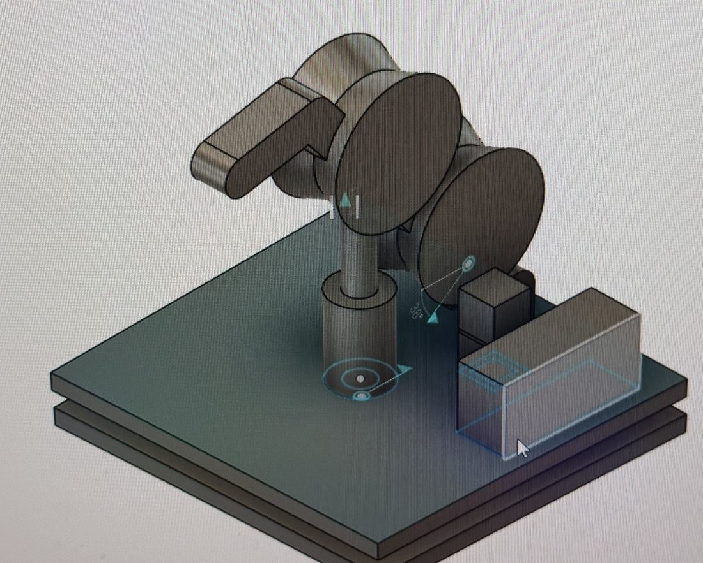
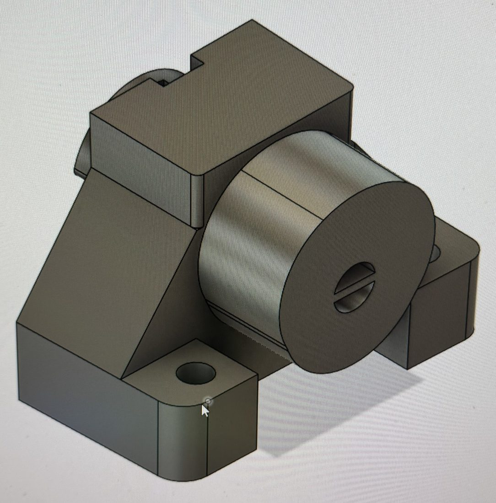
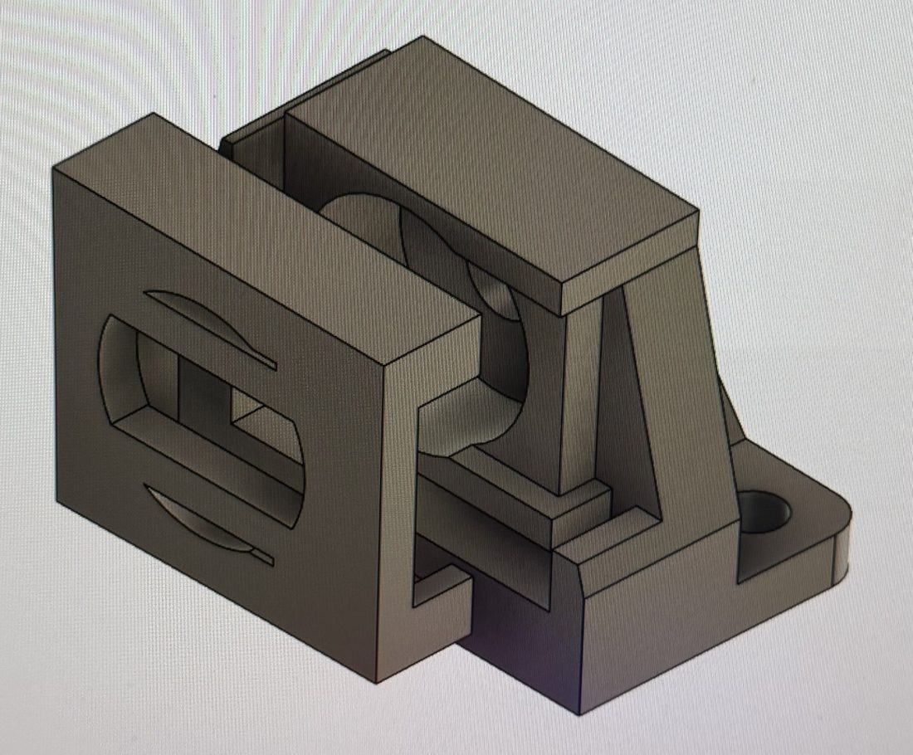
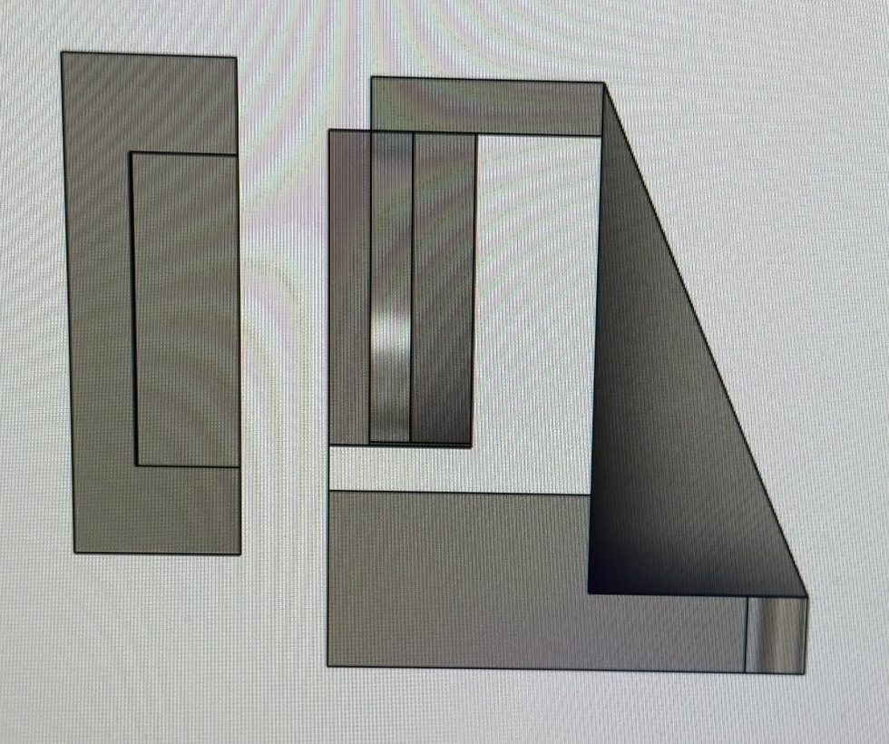
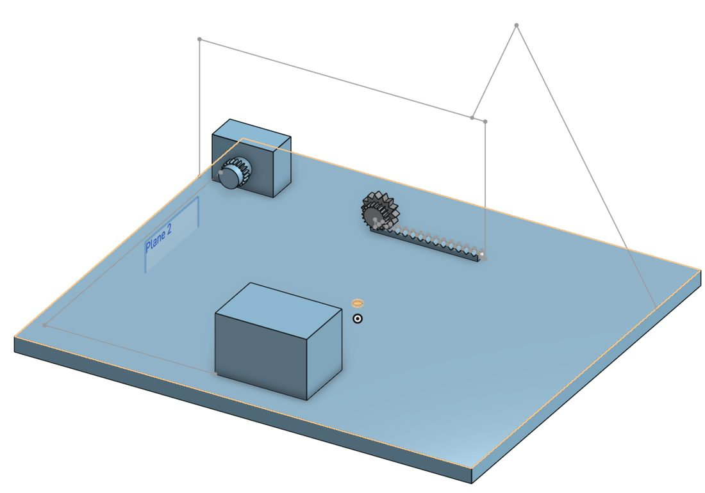
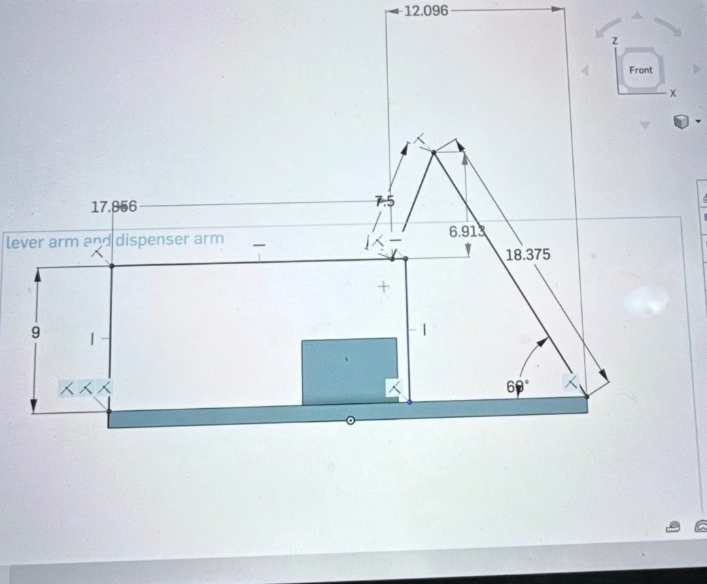

Sense
Cameras on the machine find the incoming bounce on the near court and the opponent's position on the far side. A calibrated court homography turns pixels into court coordinates in feet.
Most ball machines feed the same ball over and over. We are building one that will watch where the ball lands and where the opponent stands, choose a reply the way a professional would, and aim for that exact spot. Today the Raspberry Pi can turn a court target into wheel speeds, tilt and rotation, and plan whole drills. Field testing those drills and the vision system come next.
A real opponent reacts. They hit away from where you stand, punish a short ball, and defend when pushed wide. We wanted a machine that does the same, so we split the problem into three jobs that will run every shot. Each one is at a different stage.
Cameras on the machine find the incoming bounce on the near court and the opponent's position on the far side. A calibrated court homography turns pixels into court coordinates in feet.
A shot sampler built from professional match footage picks the stroke, direction, depth and risk. Its aim is set relative to the opponent: target x equals opponent x plus a sampled hit away distance.
A physics solver converts the target (x, y) into top and bottom wheel speeds, tilt angle and rotation, with a required margin over the net.
We built this as a team of three. Everyone worked on every part, and each of us led one area.
Wrote the software, led the computer vision testing on court footage, and shared the Raspberry Pi electronics.
Led the CAD models in Onshape and Fusion 360, wired the motors and actuator, and shared the Raspberry Pi electronics.
Led the physical build: cutting, assembling and mounting the launcher, base and brackets.
Two motor driven wheels pinch the ball and launch it. A 12 V linear actuator tilts the launcher arm to set the arc, and the whole assembly sits on a wooden base with the battery, motor drivers and Raspberry Pi.



We wrote the Python that drives every motor on the machine. One script runs each subsystem alone for testing, or all of them together, and a systemd service starts it when the Pi boots.
drills.py plans a whole drill from court targets, checks every shot before any motor moves, and refuses targets outside the court or wheel commands outside 0 to 255. Tilt now runs closed loop on the potentiometer to within 0.7°, yaw turns while the wheels spin up, and a dry run flag walks through the plan without power. Feeding is still by hand during a 6 second window.
python3 drills.py list python3 drills.py plan baseline_depth python3 drills.py run random_mix --shots 12 --dry python3 drills.py run crosscourt --shots 10
The bottom flywheel kept stalling once both wheels ran. We held single GPIO pins high and probed each driver with a multimeter. The battery read 5.94 V idle and fell to 4.9 V under load, starving the bottom driver at 4.4 V. The code was fine. A new battery fixed it.
A 0.003 s step delay ran cleanly. Halving it to 0.0015 s made the motor click and stall when reversing, so the faster setting was dropped.
Moving from an ESP32 to the Pi meant the ADC library now returned volts instead of raw counts, so every old threshold had to be recalibrated against the actuator's end stops.
# Actuator angle from the potentiometer V_MIN = 0.285 # fully retracted, 0° V_MAX = 0.610 # fully extended, 45° def tilt_degrees(): return (chan.voltage - V_MIN) / ((V_MAX - V_MIN) / 45.0) # Spin both wheels up together def wheels_on(): s1r.value = 0; s2f.value = 0 for i in range(1, 21): s1f.value = i / 20; s2r.value = i / 20 sleep(0.1)
Excerpt from demo.py and tilt sensing
We modelled the machine in Onshape and Fusion 360, designing every part before cutting or printing anything. Select any image to see it full size.






Our first court tests used wheel settings we picked by hand. The solver replaces that guesswork: given a target on the court, it returns the tilt, rotation and both wheel commands. It is plain Python with no extra libraries, so it runs on the Pi as is.
Rotation is the easy part. From a fixed spot at the baseline centre, the bearing to a target is simply atan2(x, y), as long as the ball has no sidespin.
Tilt and speed are not. One landing spot can be reached by a flat fast ball or a lofted slow one. Range alone gives one equation for two unknowns, so the solver adds a second rule: clear the net (0.914 m high, 11.89 m away) by a chosen margin.
The wheels set speed and spin together. Ball speed follows the average of the two wheel surface speeds, and spin follows their difference. Inverting those two relations gives the motor commands.
Physics gives the shape, testing gives the numbers. Drag and lift for these balls, plus how much the wheels slip, cannot be derived. We fitted the four constants to our first court results, and will refit them after a calibration run of 30 to 40 measured shots. That needs far fewer shots than a lookup grid.
Current fitted constants (Params in shotmodel.py)
This runs the same solver as shotmodel.py on the Pi, ported to the browser. Tap anywhere on the far court to choose a target, or let the sampler pick a shot against a simulated opponent. The page solves rotation, launch angle and speed, then flies the ball.
Tap the far half of the court to set a target.
This is a JavaScript port of shotmodel.py with the same equations and fitted constants: gravity, air drag and Magnus lift from spin, integrated from a 0.5 m launch height, with the launch angle limited to 15° to 40° (the wheel arm sits between 75° and 50° from horizontal). The drill buttons replay the targets defined in drills.py. The pro picks are a simplified version of the sampler: aim away from the opponent by 1.5 to 3.5 m, mostly deep.
Wheel speeds are motor settings, the actuator input sets tilt, and length is where the ball landed measured from the machine. A singles court is 23.77 m long, so 23.77 m means the ball reached the far baseline.
| Wheels, PWM top / bottom | Actuator input | Measured result | Model landing |
|---|---|---|---|
| 180 / 110 | 65 | 23.77 m, good spin | 25.0 m |
| 180 / 110 (repeat) | 65 | 23 m, right on the line | 25.0 m |
| 135 / 135 | 65 | 23.77 m | 23.8 m |
| 150 / 110 | 65 | 22 m, not enough spin | 22.0 m |
| 200 / 95 | 60 | Too far | 23.8 m |
| 200 / 95 | 63 to 68 | 22 m, about a foot short of the line | 25.2 m |
| 200 / 95 | 60 < x < max | Between the middle of the baseline and the service box | not modelled |
| 200 / 95 | max angle | Just over the service box | not modelled |
| 200 / 95 | max | Far too high | not modelled |
The fitted model matches the 135 / 135 and 150 / 110 shots almost exactly. It misses the 200 / 95 shots at higher tilt, where the real ball fell short while the model says it should go further. That points at our actuator input to angle conversion, so the next calibration step is a measured tilt sweep.
For the machine to choose shots like a professional, it needs to know what professionals actually do. We built a pipeline that turns full broadcast matches into a table of every shot: where the ball came from, where both players stood, and where the reply landed.
Scene detection splits a full broadcast at every camera cut, keeping clips between 3 and 40 seconds. Each one is a candidate rally.
Pretrained models find the ball, the court lines, every bounce and both players in each frame. A homography converts them from pixels to court coordinates.
Players switch ends at changeovers. We read the scoreboard with OCR, then counted games from the final score to know which end each player was on.
For 150 sampled rallies per match, each shot becomes one row: stroke, the incoming bounce, both player positions, the open side of the court, the target and its risk.
Our first version recorded only which zone each ball landed in. Predictions matched simply guessing the most common zone, so those features carried no signal. Shot choice depends on where the players stand, so version 2 captures both positions at contact.
# Which end is each player on? SET_GAMES = [10, 9, 13, 9, 18] # 6-4, 3-6, 7-6, 3-6, 10-8 def total_games(s_a, s_b, g_a, g_b): done = s_a + s_b return sum(SET_GAMES[:done]) + g_a + g_b def starts_near_now(score): n = total_games(*score) changeovers = (n + 1) // 2 return changeovers % 2 == 0
Ball, court and bounce models come from the open source TennisProject. The rally cutting, player assignment, shot extraction and features are our own.
We filmed clips from the machine's own height and position and tested the vision pipeline on them. Several findings changed the hardware design.
A 7 point court calibration resolves a bounce near the baseline to a fraction of an inch per pixel. Accuracy drops toward the net, where depth is compressed to about 4.8 in/px.
From the baseline centre, the near doubles corners sit about 90° off a forward camera's axis. No software fixes that, so the design moved to two cameras angled outward.
iPhone HDR video looked right on the phone but OpenCV read washed out colours, which broke the ball colour thresholds. Turning HDR off fixed it.
A yellow ball on a blue court separates cleanly by colour. An HSV threshold inside a court shaped polygon finds the ball and runs easily on a Raspberry Pi.